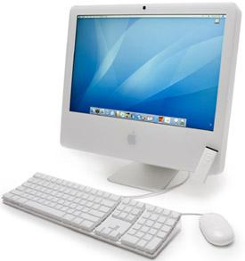
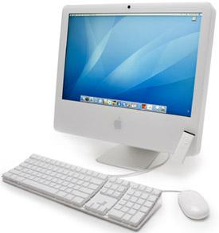

Bilgisayarın tarihçesi, bilgiyi hesaplamak, düzenlemek ve değiştirmek için kullanılan yazılım ve donanımların tarihsel gelişiminden bahsetmektedir. Bilgisayar, en basit bakış açısıyla bir matematiksel işlemci, yani bir hesap aracıdır ve veri işler.
İlk büyük ilerlemeyi Howard Hathaway Aiken, 1937'de Mark 1 adını verdiği bilgisayarda yarı elektronik devreler kullanmakla yapmıştır. Mark 1 de delikli kart sistemiyle çalışmasına karşın; daha önceki benzerlerinden farklı olarak, logaritma ve trigonometri fonksiyonlarını da hesaplayabiliyordu. Yavaş olduğu halde, tam otomatik olarak çalışması ve uzun işlemleri çözebilmesi ona büyük avantaj sağlıyordu.
Çağdaş bilgisayarların tarihi 4 döneme ayrılarak incelenir:
- 1. Kuşak (1950-1958): Lambalı teknolojiye dayanan Eniac benzeri çok büyük aygıtlar.
- 2. Kuşak (1958-1964): Transistör kullanan bilgisayarlar.
- 3. Kuşak (1965-1971): Transistör yerine tümdevre kullanan bilgisayarlar. Bu dönemde bilgisayarları kendi aralarında iletişim de kurabiliyorlar.
- 4. Kuşak (1972-günümüz): Günümüz bilgisayaları.
İlk bilgisayar Eniac
II. Dünya Savaşı sürecinde, ordunun daha hızlı bilgisayarlara gereksinim duyması, bilgisayar tarihinde bir devrim yaratan ENIAC'ın yapılmasına yol açmıştır. ENIAC, J. Presper Eckert ve John W. Mauchly ekibiyle 1945 yılında yapıldı. En büyük özelliği; bugünkü çiplerin atası sayılabilecek elektron tüpleri ve RAM bellek kullanılması olmuştur. Tasarlanmış programları çalıştırabilme özelliğiyle ENIAC, geniş bir ev kadar (167 m2) yer kaplıyor ve saatte yaklaşık 180 kW elektrik harcıyordu. ENIAC'ın ardından kısa ömürlü olan ve DEVAC adı verilen bilgisayar ve ticari anlamda satışa sunulan ilk bilgisayar olan UNIVAC'ın yapılması 1952 yılına dek uzanmıştır.
Bilgisayarların Çalışma Prensibi
Bilgisayarların çalışma prensibi; matematiksel işlem temeline dayanır. Çeşitli programlama dilleri ile hazırlanmış olan yazılımlar sayesinde birçok alanda kullanılabilmektedir. İnternetin insan hayatına girip yaygınlaşmasıyla bilgisayarın önemi daha da artmıştır. Güncel bilgisayarlar kişiselleşerek kişisel bilgisayar (PC) adını alarak, cebe sığacak kadar küçülmüş büyütülmüş ve hızları büyük aşamalar kaydetmiştir. Gelişen teknolojiyle birlikte bilgisayar fiyatları da giderek düşmektedir.
 
